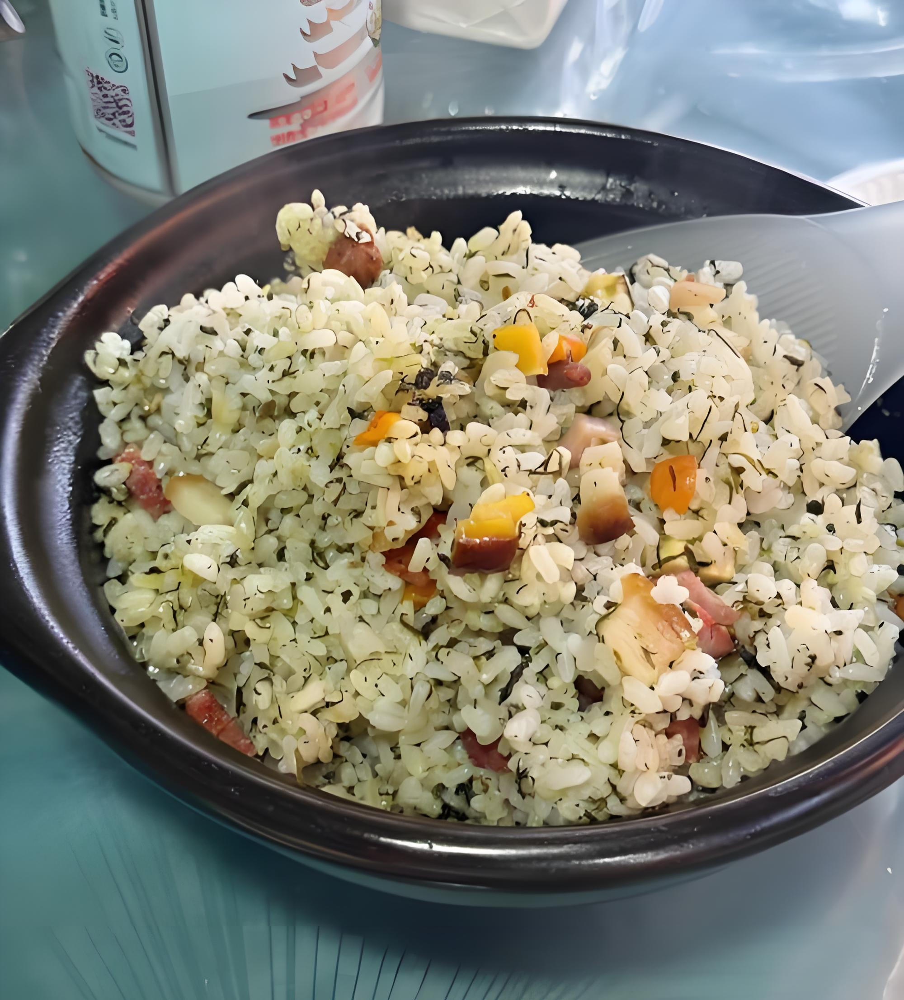
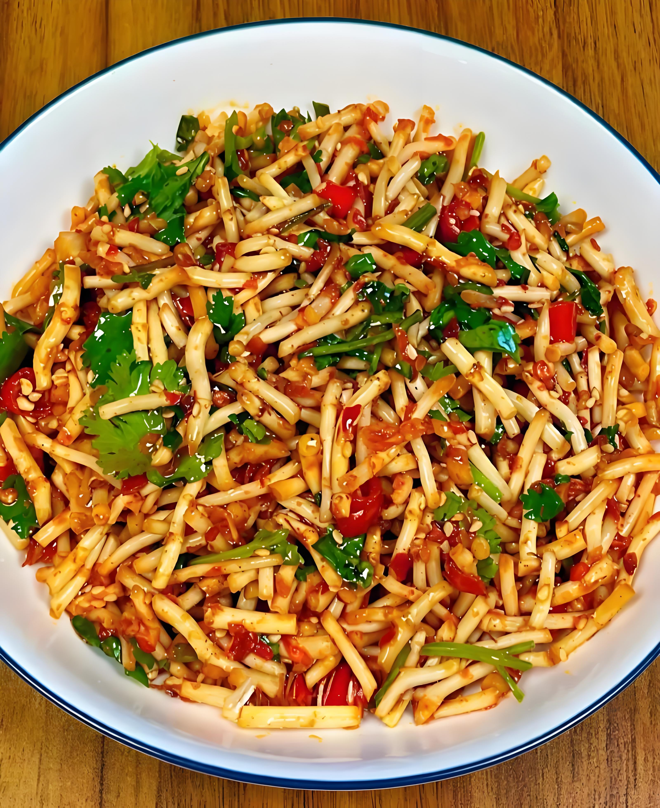

梵天净土，桃源铜仁
自然景观
国家级自然保护区
梵净山
中国十大避暑名山之一，原始森林，佛教圣地，蘑菇石奇观
原始森林
佛教圣地
蘑菇石奇观
建议游览：1-2天
印江县、江口县、松桃县交界处
梵净山详细简介
中国十大避暑名山・佛教圣地
梵净山位于贵州省铜仁市印江县、江口县、松桃县交界处，是中国十大避暑名山之一，也是国家级自然保护区和世界自然遗产。
核心亮点
- 原始森林：黔金丝猴栖息地
- 佛教圣地：中国五大佛教名山之一
- 蘑菇石奇观：风化形成标志性景观
- 云海奇观：景色壮观
溶洞奇观
九龙洞
大型天然溶洞，钟乳石千姿百态，地下奇观
大型天然溶洞
钟乳石奇观
地下景观
建议游览：2-3小时
碧江区漾头镇
九龙洞详细简介

天然温泉
石阡温泉群
天然温泉，富含多种矿物质，养生休闲胜地
天然温泉
富含矿物质
养生休闲
建议游览：半天-1天
石阡县汤山镇
人文风景
历史文化
铜仁古城
明清古建筑群，锦江穿城而过，风光旖旎
明清古建筑
历史文化
锦江风光
建议游览：半天
碧江区市中街道
苗族文化
苗王城
苗族传统文化展示地，民族风情浓郁
苗族文化
传统建筑
民族风情
建议游览：半天
松桃县正大乡
美食推荐

特色小吃
社饭
铜仁特色美食，社菜与腊肉炒制，香味扑鼻

地方名菜
酸汤鱼
贵州名菜，酸汤开胃，鱼肉鲜嫩

特色蔬菜
折耳根
贵州特色蔬菜，清热解毒，口感独特
交通出行
如何到达
航空
铜仁凤凰机场，连接贵阳等城市
铁路
铜仁站连通重庆、怀化
公路
高速网络密集，交通便利
主要交通路线
铜仁 → 梵净山
约80公里，车程2小时
铜仁 → 九龙洞
约25公里，车程40分钟